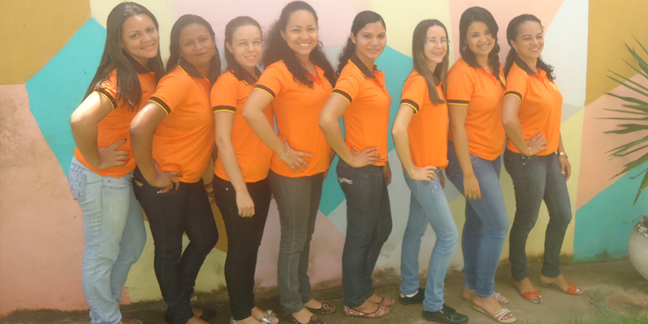
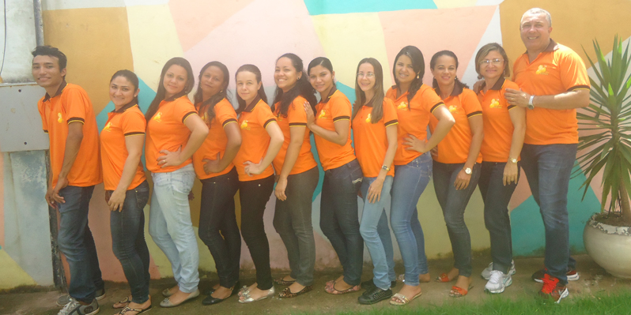
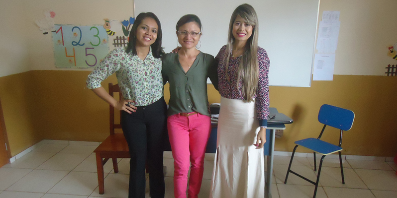

SOBRE NÓS

Somos uma escola de excelência na Educação Infantil e Ensino Fundamental Menor (1° a 5° ano), situada na Alameda Osasco nº 2451 Bairro: Nova Estrela - Castanhal PA. Com profissionais experientes, salas climatizadas, brinquedoteca, parquinho, quadra poliesportiva, banheiros adaptados para PNE, espaço seguro e confortável para as crianças e preocupação com o Meio ambiente fazendo reuso de materiais.

NOSSA EQUIPE
A equipe é formada da direita para esquerda por Edson Soares Pinho, (Secretário) formação: licenciatura em Matemática, Valdirene Regiane Pantoja Pinho, (Diretora e Professora do 1º ano) formação: Licenciatura em Pedagogia, Josineide do Carmo, Professora da turma do Maternal formação: Licenciatura em Pedagogia, Danubia Souza - Auxiliar da turma do Maternal, cursando Pedagogia, Aline Dias de Carvalho, Professora da turma do Jardim I, formação: Licenciatura em Pedagogia, Marcilene das Neves - Auxiliar da turma do Jardim I, formação: Licenciatura em Pedagogia, Camila Renata, Professora da turma do Jardim II, formação: Licenciatura em Pedagogia, Márcia Dias de Carvalho, Auxiliar da turma do Jardim II formação: Licenciatura em Pedagogia em conclusão, Kelly Simone, Professora da turma do 3º ano do Ensino Fundamental, formação: Magistério, cursando Pedagogia, Helen Mara, Professora do 2º ano do Ensino Fundamental, formação: Licenciatura em Pedagogia, Sandra do Socorro, Auxiliar de Serviço Gerais Formação: Ensino Médio e Lucas Gabriel, Auxiliar de Portaria formação Ensino Fundamental Completo.
MISSÃO DA ESCOLA
Oferecer aos alunos uma educação pautada nos valores éticos, morais, políticos e sociais, formando assim, cidadãos conscientes de seus direitos e deveres capazes de interagir e transformar a realidade para uma vida digna em sociedade.

EQUIPE DE MULTIPROFISSIONAIS
Lado esquerdo Assistente Social FABIA MICHELE e lado direito Nutricionista TAÍSSA ARAUJO
VISÃO DE FUTURO
Sermos uma escola de referência e qualidade de ensino em nossa cidade, primando pela qualidade e criatividade no ensino que ministraremos, pelo trabalho participativo, eficaz, inovador e responsável desenvolvido por nossa equipe, respeitando nossos alunos, pais e comunidade escolar, contribuindo para uma sociedade onde se efetive o princípio de igualdade.